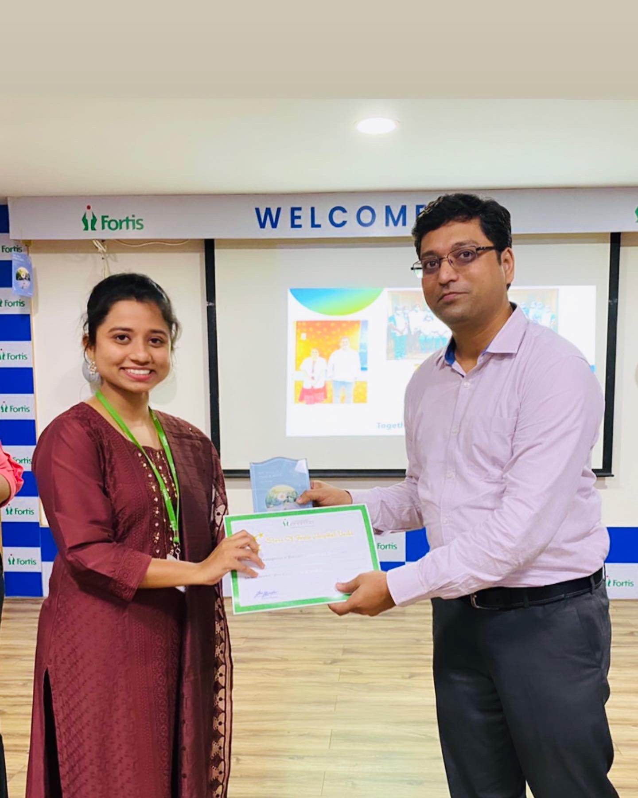

Intro
Hi there !
I'm Bhagyashree Kale, an data analyst with a passion for turning data into practical solutions.I'm eager to learn and grow in this dynamic field.By the way, check out my awesome work.
My key skills include Advanced Excel,data analysis, data visualization, and proficiency in SQL, I'm also adept at problem-solving and effective communication.
Experience in creating dashboards,presentations & graphs.Excellent knowledge of connecting Microsoft Power Bi Desktop to various data sources(SQL databases,Excel,CSV).
I'm committed to continuous learning and professional development to fuel my passion for data-driven insights.
I am eager to contribute to your organization's success.
➡️𝐓𝐨𝐨𝐥𝐬 & ğ“ğğœğ¡ğ§ğ¨ğ¥ğ¨ğ ğ¢ğğ¬ 𝐈 𝐰𝐨𝐫𝐤-
► 𝐏𝐨𝐰𝐞𝐫 𝐁𝐈 - Data cleaning, Extract Transform & Load [ETL], Data Modelling, DAX, Data Visualisation, Publishing Reports & Dashboards.
► 𝐌𝐲𝐒𝐐𝐋 - Data types, Queries, Joins, Aggregate Functions, Windows Functions.
► 𝐀𝐝𝐯𝐚𝐧𝐜𝐞 𝐄𝐱𝐜𝐞𝐥 - Pivot Tables, Charts, Lookups, Power Query and Power Pivot.
► ğğ²ğğ¡ğ¨ğ§ - Data Types, Operators, Control Flow, Functions, Oops, Regular Expression , Pandas , Matplotlib.
➡️𝐌𝐲 ğ…ğ®ğ§ğœğğ¢ğ¨ğ§ğšğ¥ 𝐚𝐫𝐞𝐚𝐬-
► Data Cleaning
► Data visualization
► Data Analysis & Interpretation
► Dashboarding
► Business intelligence
Projects
𝐒𝐐𝐋 𝐏𝐑𝐎𝐉𝐄𝐂𝐓
✤ The primary objective of this project to uncover insights into consumption patterns,most common pizza types,peak sales time,revenue detail and much more.
✤ Aiming to enhance decision making,marketing strategies to boost sales performance.
𝐏𝐎𝐖𝐄𝐑-𝐁𝐈 𝐏𝐑𝐎𝐉𝐄𝐂𝐓𝐒

✤ The objective of this project is to design and develop a dynamic and interactive Car Sales Dashboard using Power BI.
✤ The dashboard will visualize critical KPIs related to car sales, helping us understand sales performance over time and make data-driven decisions and identify trends and opportunities for growth.

✤ The objective of this project is to develop a comprehensive credit card weekly dashboard that provides real-time insights into key performance metrics and trends, enabling stakeholders to monitor and analyze credit card operations effectively.

✤ The objective of the call center analysis project in Power BI is to analyze call center performance metrics such as call volume, wait times, resolution rates, and customer satisfaction scores to identify opportunities for improvement and operational efficiency.
✤ By leveraging Power BI's visualization tools, the project aims to provide actionable insights to optimize staffing levels, training programs, and customer service processes for enhanced overall performance and customer experience.
𝐄X𝐂𝐄𝐋 𝐏𝐑𝐎𝐉𝐄𝐂𝐓

✤ The objective of this Excel project is to provides a comprehensive analysis of Indian Premier League (IPL) data from 2008 to 2018. It includes interactive visualizations and insightful metrics to understand player performance, team dynamics, and match outcomes over the years.
✤ The goal of this project is to provide a user-friendly platform for cricket enthusiasts to explore and analyze IPL data,
To offer valuable insights for team managers, analysts, and fantasy league participants,To showcase the power of Excel for data analysis and visualization in sports analytics.
certificates
Explore my journey of continuous learning & growth through these certifications,each representing a milestone in my quest for excellence.
______________________________________________________________________
✤ 1. Successfully completed PwC's Power BI Job Simulation,mastering real-world analytics challenges and enhancing my data visualization skills.
______________________________________________________________________
✤ 2. Certified in Accenture's Data Analytics & visualization Job Simulation,demonstrating proficiency in data interpretation and visual storytelling through PowerPoint presentation,Excel Advanced functions and pivot charts.
______________________________________________________________________
✤ 3. Mastered SQL fundamentals with HackerRanks's Basic SQL Certificate,demonstrating proficiency in database querying and manipulation.
______________________________________________________________________
✤ 4. Demonstrated foundational Excel skills with the Great Learning Excel Beginner Certificate.
______________________________________________________________________

✤ 5.Awarded the process improvement Certificate by Fortis Hospital for exemplary contribution to enhancing patient care & Patient positive feedback.
______________________________________________________________________
Get in touch